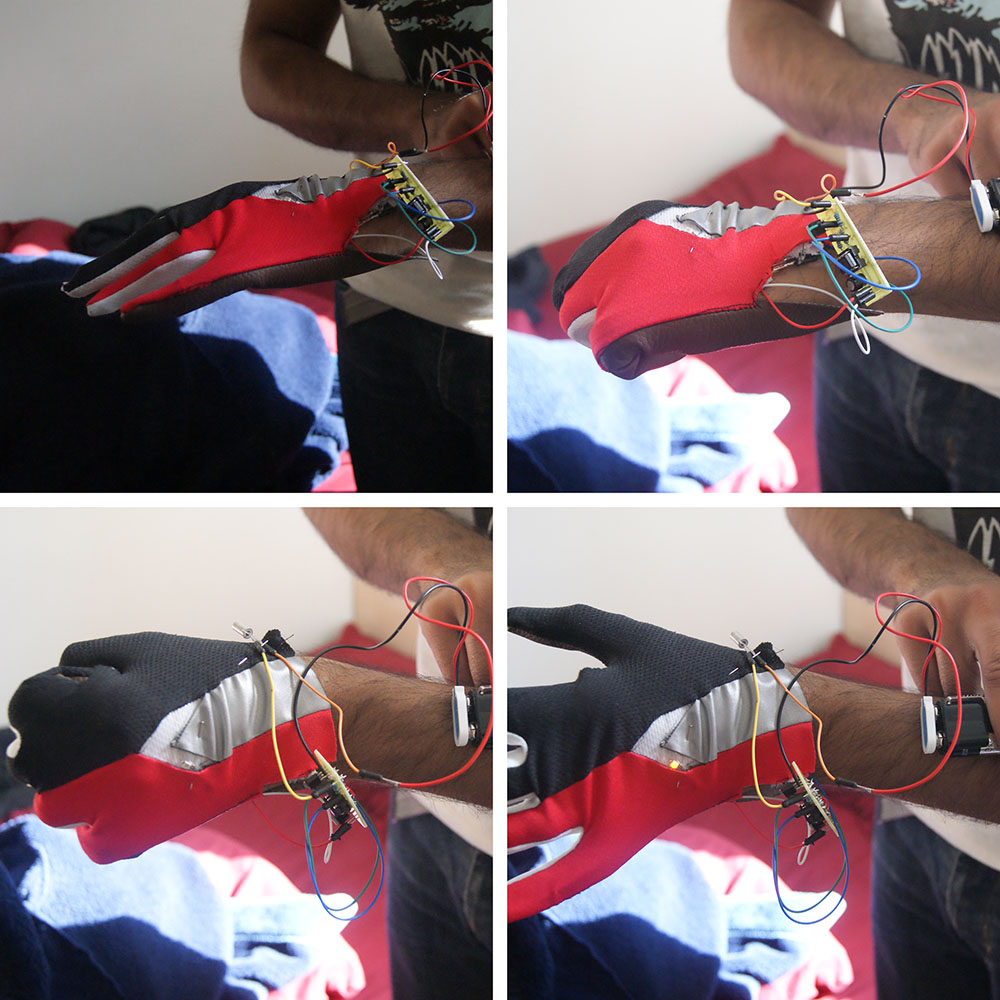

This project initially started from an innovative
material idea related to fibre optics. I had prototyped a method of
using fibre optics that had been altered and woven amongst normal
fabric, in order to create an illuminating textile.
However early prototypes and discussions with a variety of
demographics, a more prevalent issue arose; not all cyclists indicate
when turning, and in the UK the majority of accidents occurred at or
approaching a junction.
As a result the focus of design shifted to target their behaviour,
and design a product that created better communication between
cyclists and other road users.
My Role: Researcher and Designer
The project grew out of an initial idea: opening the outer layer of a fibre optic cable up allowed light is allowed to escape along the length, with diminishing returns the longer the cable.. This then lead on to trying to weave with the fibre optics and see how it can be applied.
Whilst light is typically trapped in a fibre due to the difference in refraction indexes, breaks in the outer layer would allow some light to escape
Prototyping is great but there always needs to be an application for an idea, at the very least to drive
the design in the right direction early on.
Around this time I had read a news story on a cyclist who had died as a result of a traffic collision,
and so I began to research this issue further to see what the context was.
The initial focus was on the quanititive data on cycling in the UK. There were a number of studies available which provided an overview, especially with cycling on the rise. Three statistics clearly stood out:
53%
of the London population claimed to cycle
19,000
Accidents involving cyclists occured across the UK in 2012
2/3
of accidents occured at or approaching a junction, with the biggest reason being the motorist "Looked but didn't see"
Mintel 2013, ROSPA 2013
Furthermore, in the UK, the most dangerous times to cycle are at 8:00 to
9:00 and 15:00 to 18:00 (ROSPA, 2013), which are the times when most commuting takes place.
Interestingly, this matches with data found in Australia where close to 200 cyclists involved in
accidents where interviewed, and it was found that the majority of accidents happened at
low light conditions, such as dusk, dawn or at night (QUT, 2013).
There were clearly issues between cyclists and other motorists at junctions, and so the focus became how to create better communication between the two, leading to safe travel
The first step was evaluating what else was available on the market, and if any product had tried to solve this problem already. Some reasearch found a range of potential products, all aimed at improving the ability for a cyclist to communicate their intentions. As such, a workshop was arranged to discuss some of these with a range of cyclists
The discussion brought up some concerns and issues with these products, but an interesting insight into this issue, combined with the statisitical data, it became apparent that a lot of the time, a cyclist doesn't always indicate. The key outcomes from the workshop were:
It became apparent that a succesful product shouldn't add to the number of mental steps in the decision making process. The current situation involved cyclists not even indicating to start with, so having added steps in the process clearly wouldn't be successful.
At this point, it became possible to write up a design brief, the goal was simple:
The product should allow a cyclist to communiate with other road users when they turn, complimenting and encouraging better behaviour, with clear benefits to the user.
When communicating their intentions, a cyclist should raise their hand to indicate to other users, regardless of the light conditions. This was seen as an opportunity to
use this action as a trigger, for a built in light source. This could allow for a product which would improve visibility, and with the right trigger, wouldn't force any
further behavioural change than necessary.
Heavy prototyping began in order to understand options for using the hand movement as a trigger. The first focus was the adjustment of the hand from being around the handlebar, to opening up as it was moved out to indicate.
Using a flex sensor along the finger, a circuit was created to light up an LED based on the hand open/closed
The flex sensor then underwent calibration with a variable resistor, to have a comfortable threshold to activate the LED. An amber LED was also chosen
in order to match with typical car indicators, to match with existing communication methods.
This rudimentary prototype then evolved into a more "contained" solution: a glove was sewn together with the
electronics integrated in, which could then be passed on to users to test. In this version, multiple LED's were included and arranged into an arrow:
New prototype of the glove, with all electronics integrated in hidden layer of fabric, and multiple LEDs
This glove was tested with users and handlebars, to check hand positions and to recalibrate the flex sensor and resistance. It was apparent that individuals had preferred hand positions on the handlebars, and that there are multiple handblebar designs.
From passing the prototype on to users to test out, a suspicision from early become clearer, that a single trigger mechanism through the hand would not suffice in isolation.
People would routinely stretch their fingers, or open up their grip during a journey , whether resting at a stop light, or to even loosen their grip around the handlebars.
The action of stretching the arm out was one that is unique to indicating for a turn, and became the point of focus
I started to investigate other sensors, and integrated a tilt sensor into the wrist which acted as a dual switch alongside the bend sensor. The aim was that only when the hand was in a particular orientation and open, the LED's would light up.

In conjunction with the change in electronics, the design of the glove began to develop. Whilst at this stage, the aesthetics were not a primary concern, reflective material was integerated with the LED's in order to provide guidance even if the batteries had run out:
With the project drawing to a close, the product did seem to fulfill a number of the brief's requirements, however at the present stage, it was incomplete.
A design for a case to house electronics and the battery was drawn up, that would form part of the strap at the wrist of the glove.
Consideration was also given to how other sensors could be beneficial, such as an accelerometer instead of a tilt sensor, allowing for more accurate measurement
of the movement. As well as other design considersations, such as padding on the underside of the glove, and materials suitable for wicking and weatherproofing.